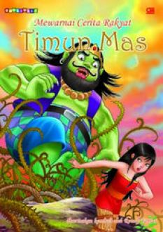

Dahulu kala di Jawa Tengah ada seorang Janda yang sudah tua. Mbok Rondo namanya. Pekerjaannya hanya mencari kayu di hutan. Sudah lama sekali Mbok Rondo ingin mempunyai seorang anak. Tapi dia hanya seorang janda miskin, lagi pula ia sudah tua. Mana bisa ia mendapatkan anak.
Pada suatu hari, sehabis mengumpulkan kayu di hutan. Mbok Rondo duduk beristirahat sambil mengeluh;
"Seandainya aku mempunyai seorang anak, beban hidupku agak ringan, sebab ada yang membantuku bekerja."Tiba-tiba bumi bergetar, seperti ada gempa bumi. Di depan Mbok Rondo muncul raksasa bertubuh besar dan wajahnya menyeramkan. Mbok Rondo takut melihatnya.
"Hai, Mbok Rondo, kamu menginginkan anak, ya? Aku bisa mengabulkan keinginanmu," kata raksasa itu dengan suara keras."
"Benarkah?" tanya Mbok Rondo. Rasa takutnya mulai menghilang.
"Benar....Tapi, ada syaratnya. Kalau anakmu sudah berumur enam belas tahun, kau harus menyerahkannya kepadaku. Dia akan kujadikan santapanku," jawab raksasa itu.
Karena begitu inginnya dia punya anak, maka Mbok Rondo tidak berpikir panjang lagi. Yang penting segera punya anak.
"Baiklah, aku tidak keberatan," jawab Mbok Rondo.
Kemudian, raksasa itu memberi biji mentimun kepada Mbok Rondo. Mbok Rondo segera pulang dan menanam benih itu di halaman belakang.
Setiap hari Mbok Rondo menyirami biji timun itu.
Ajaib!!
Dua minggu kemudian, tanaman itu sudah berbuah. Buahnya lebat sekali.
Diantara sekian banyak buah mentimun yang tumbuh, ada satu satu buah yang sangat besar. Warnanya kekuningan. Kalau tertimpa sinar matahari, buah itu berkilau seperti emas. Mbok Rondo sangat tertarik pada buah mentimun yang paling besar itu, ia memetiknya dan membawa pulang buah yang paling besar itu.